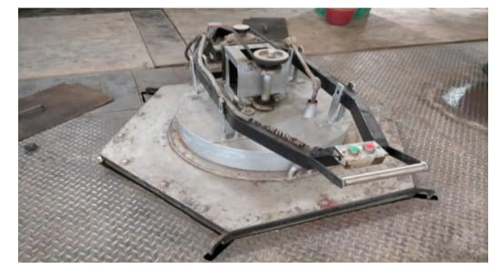
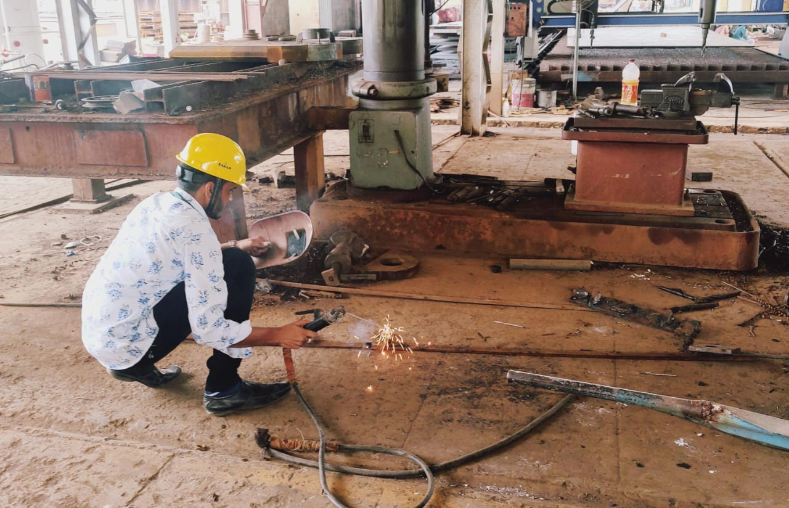
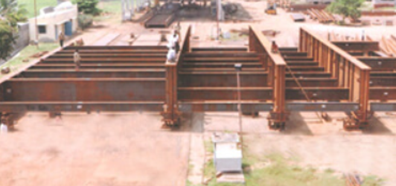

Hands-on Experience
1. Heat Treatment Process
Gained experience in hardening, tempering, annealing, and normalizing of steel samples using furnaces and quenching media. Measured microstructural changes and hardness using Brinell and Rockwell testers.
2. Welding Practice
Practiced SMAW (Shielded Metal Arc Welding) techniques. Learned safety procedures, joint configurations, and bead formation on mild steel plates.
3. Fabrication Industry Internship
Interned at a local fabrication industry where I participated in sheet metal cutting, fitting, welding, surface finishing, and assembly operations. Understood workflow planning and real-world challenges in manufacturing.